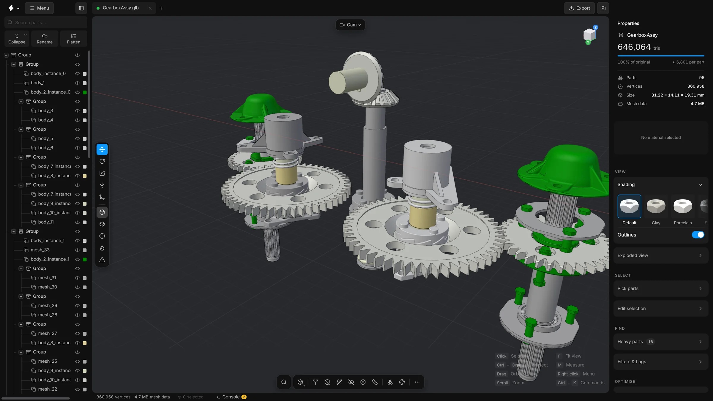
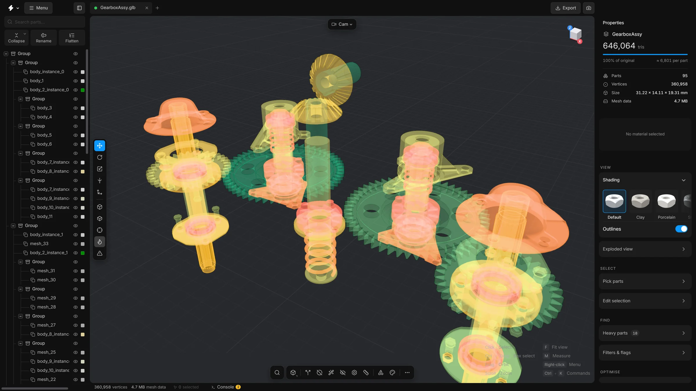
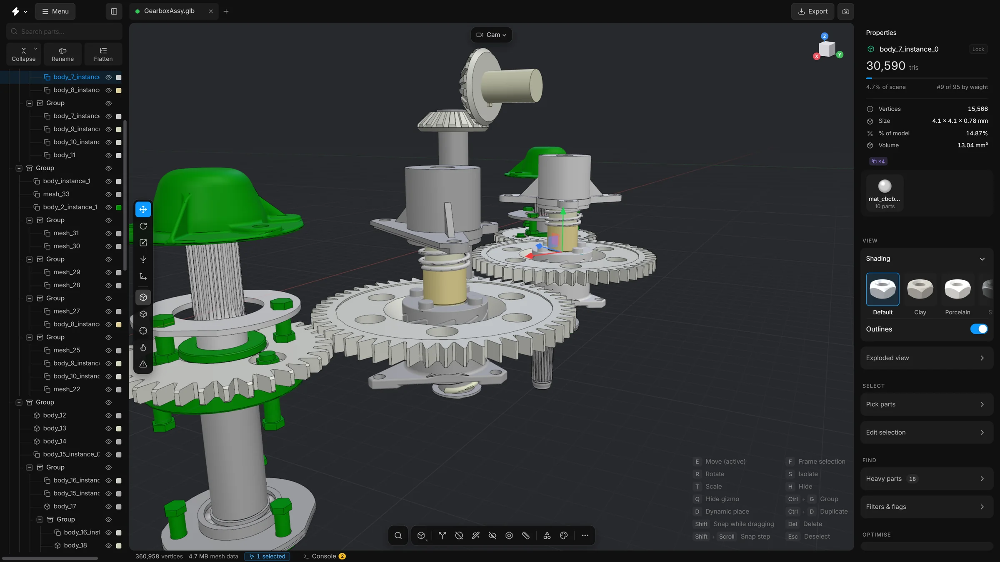
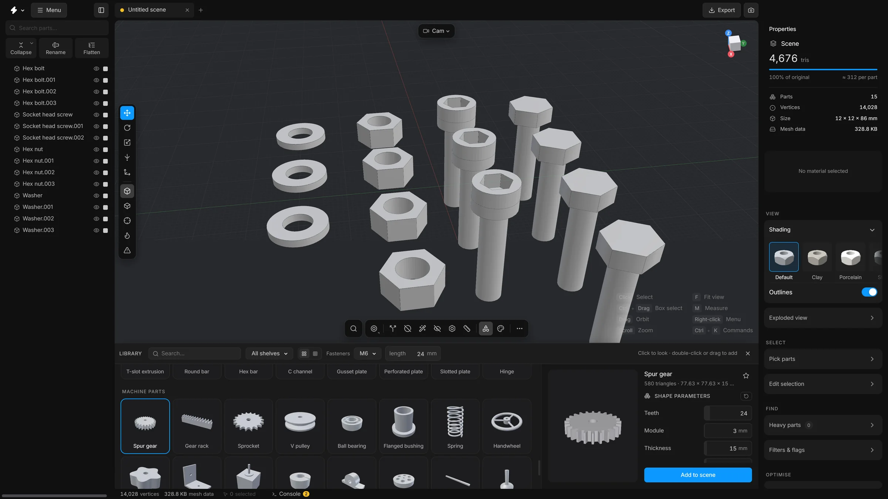

01
One button, half the triangles
Smart optimise runs every clean-up in order, then reduces to your target. This gearbox went from 646,064 triangles to 322,988. One Ctrl+Z puts it all back.
v0.25.0·Beta·MIT·Windows and macOS
Open a CAD assembly, strip what nobody sees, export a light GLB. Free, and it never leaves your computer.


Exploded view
Scroll to pull this 43-part derailleur apart. One slider does it in the app, and every part has its own row and triangle count.
Why
400 identical bolts, 80 duplicate brackets, half a million broken triangles. MeshOptimiser keeps each repeat once, rebuilds the bad geometry and drops what you can’t see.
A compressed GLB, and a viewer to check it in. It runs on your machine. Every part has a row. Every action has an undo.
| 400 bolts × 50 KB | 1 mesh × 50 KB + 400 positions |
|---|---|
| 80 brackets × 12 KB | 1 mesh × 12 KB + 80 positions |
| 500K broken triangles | Rebuilt, and the tiny ones dropped |
| 320 MB STEP | 11 MB compressed GLB |
A closer look
Smart optimise runs every clean-up in order, then reduces to your target. This gearbox went from 646,064 triangles to 322,988. One Ctrl+Z puts it all back.

CAD names rarely say what a part is. Fasteners reads each part’s outline and finds bolts, screws, nuts and washers, and leaves bushings and bearings alone. Forty-eight here, 22,760 triangles.

Blocks rebuilds a part from a coarse grid, so its steps, arms and openings stay. Two heavy gearbox parts went from 72,666 triangles to 212.
What it saves
One press of Optimise on a real CAD assembly, read off the app’s own Properties card.
Result
−50% triangles 646,064 → 322,988Before and after
Triangles left, by level
MeshOptimiser v0.15.0, Gearbox Assy (95 parts, 646,064 triangles), Smart optimise on Balanced with Reduce triangles on. Strong ends at 161,980 triangles and 1.6 MB.
The library
Bolts, nuts, pipe fittings, bearings, brackets, gears, a servo, a circuit board. Set the size, then drag it in.
 Cube
Cube Hex bolt
Hex bolt Hex nut
Hex nut Tube
Tube Plate
Plate Spur gear
Spur gear Axial fan
Axial fan Angle bracket
Angle bracket Sphere
Sphere Socket head screw
Socket head screw Thin nut
Thin nut Pipe elbow
Pipe elbow Flat bar
Flat bar Gear rack
Gear rack Heatsink
Heatsink T-slot bracket
T-slot bracket Cylinder
Cylinder Countersunk screw
Countersunk screw Lock nut
Lock nut Pipe tee
Pipe teeTry it
The app’s own search. Type a part, a library item, a command or a sum.
Try it
The app’s own Quick wand. Point at a slice, click a command. Select a part and the ring changes to fit it.
Claude·New
Describe the job. Claude does the clean-up with the same tools you click, asks before it changes anything, and every change is one undo.

Screenshots






The assembly in these pictures is Gearbox Assy from Khronos’s glTF-Sample-Models, a JT CAD sample converted by Okino Computer Graphics. The bolts, nuts, washers and gears come from the app’s own library.
More to build with, and a better way to line it all up. Twenty-six new library parts, an Align parts panel, a Transform panel that works on several parts, and a search you can move.
Free and open source, MIT. Windows and macOS. Your files never leave the computer.